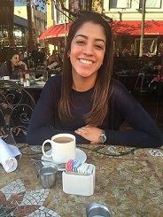
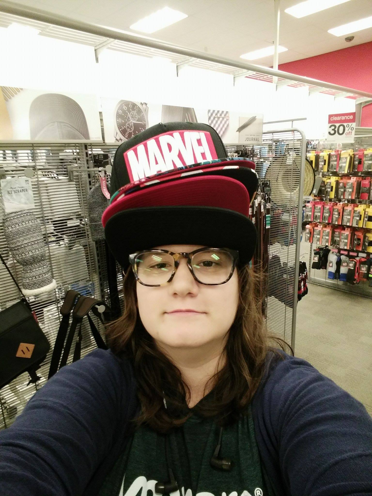

Dr. Stacey Doan integrates emotional, socio-cultural and developmental perspectives, focusing on examining the biological, social and individual correlates of physical health and psychological well being. She is interested in how the mind influences physical health, and how the body may affect psychological well-being, with a particular interest on emotions and stress. Moreover, her work is focus on understanding the role of social relationships.
Her work is funded by the National Institutes of Health, and has been published in the top developmental and health journals.
Principal Investigator
Dr. Cindy Liu studies the role of everyday and life experiences on psychological well being in parents and young children. As a clinical and developmental psychologist at Beth Israel Deaconess Medical Center / Harvard Medical School, she is interested in applying her research to mental health interventions for families. Her work has been funded by NIH and a number of foundations, and has been featured by NPR and CBS News. Dr. Liu lives in Brookline Massachusetts where she is a mother to two boys, a preschooler and an infant.

Lab Manager
Melissa Pedroza graduated from Johns Hopkins University with a Bachelor's in Psychology. She has an interest in working with low-income families and exploring how they cope with emotional and cognitive challenges. More specifically, she wants to investigate themes that are typical among undeserved populations and how one's culture plays a role in stress management.
She plans on continuing on to graduate school to pursue a degree in clinical psychology.
In her free time, Melissa enjoys exploring new places and spending time with her friends and family.
Research Analyst
Ka Ki Fung deveolped scientistmommy.com with Kazandra as research analyst at Center of Inoovations and Entrepreneurship ans is currently studying at Claremont McKenna College as a Economics-Engineer Major. She is an aspiring computer programmer who codes to solve issues faced by the society. In her free time, Ka Ki likes to explore and travel to new places and develop projects of her interest.

Research Analyst
When Kazandra Zelaya is not working on Scientist Mommy or studying, she is obsessing over ninjas and whether or not she would sky dive. She takes great enjoyment in working on any technical related project and seeing the impact they make on the world. She also loves her three dogs.